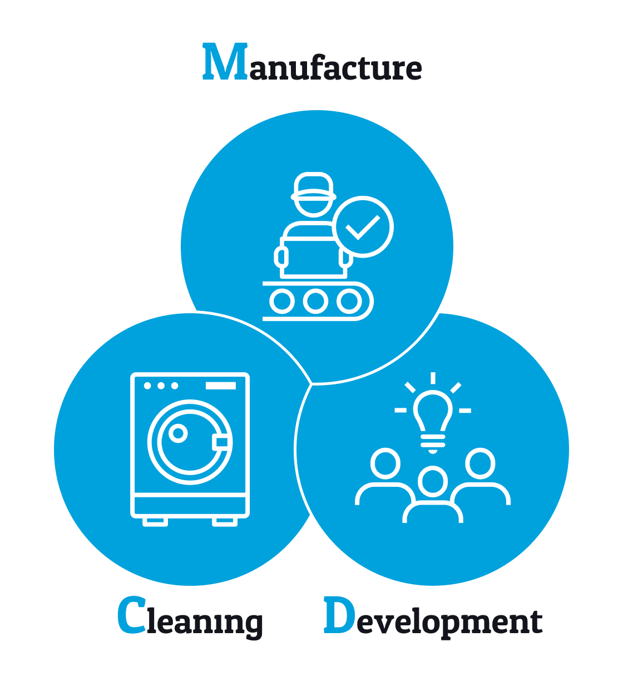
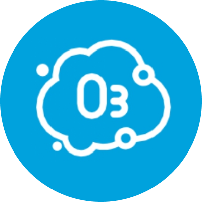
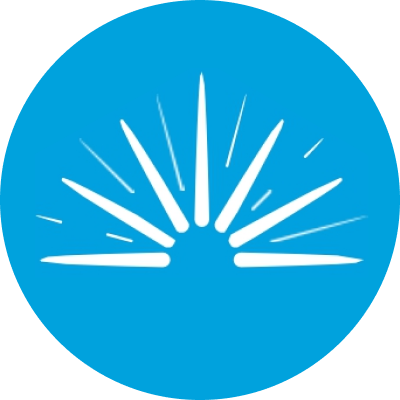
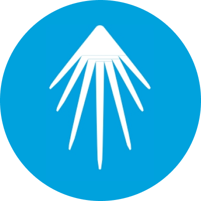
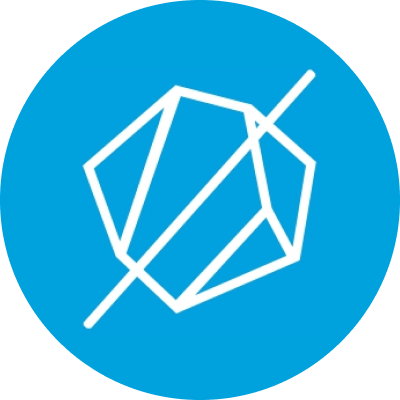
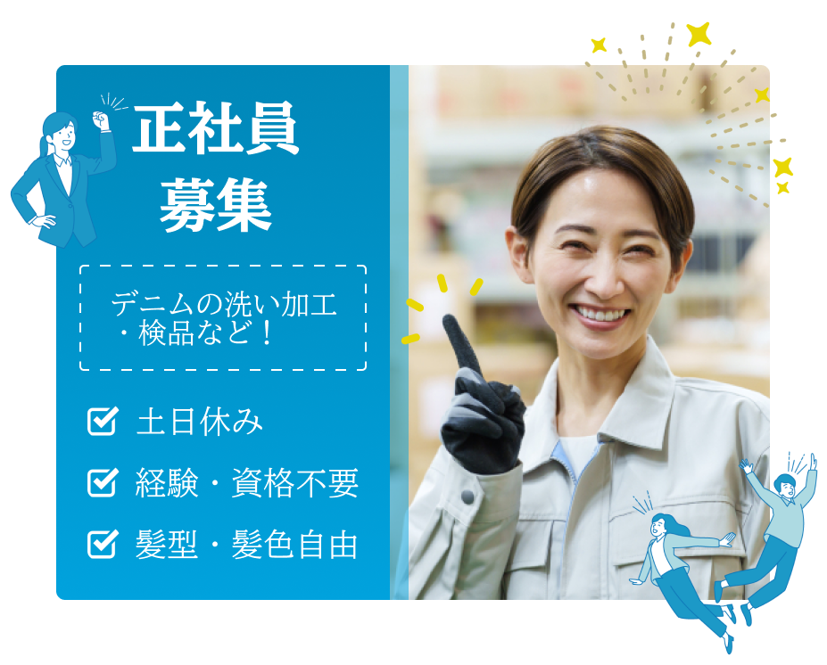

M.C.Dは、ジーンズの洗い加工において国内最大規模を誇る生産拠点です。
高い技術力と生産性を追求しながら、次世代のモノづくりに向けた研究・開発にも取り組んでいます。
その役割を象徴するのが、Manufacturing（製造）、Cleaning（特殊洗い加工）、Development（開発）。それぞれの頭文字を取り、「M.C.D」と名付けられました。
ウォッシュ加工をはじめとする洗い加工の研究開発に取り組み、常に新たな技術や表現に挑戦しています。
ジーンズを中心とした衣料品の洗い加工において、1日5,000枚、年間120万枚の生産能力を有しています。
ストーンウォッシュやケミカルウォッシュ、染色・脱色加工、レーザー加工など、多様な加工に幅広く対応。
さらに、地球環境の持続可能な発展を目指し、水・熱・薬剤の使用量を削減するなど、環境負荷を抑えた最新のサステナブル技術を取り入れたモノづくりに取り組んでいます。
2022年には、従来の水使用量を95％削減し、オゾンガス加工と組み合わせた独自の加工技術で特許を取得しました。
さらに、加工工程で発生する排水の再利用や、排出される汚泥のリサイクル、従業員の作業負荷を軽減するレーザー加工技術の開発にも取り組んでいます。
環境への負荷を抑えながら、より効率的で持続可能なモノづくりを追求しています。
国内外を舞台にグローバルな事業を展開するM.C.D。
挑戦を恐れない精神と、細部までこだわり、人の心に残るものを生み出すモノづくりの姿勢。
その二つのスピリットが融合することで、これまでにないデニム製品が生み出されています。
秋田の地から、世界へ。M.C.Dの最先端のデニムが発信されています。

M.C.Dでは、ジーンズの品質を支える加工技術の開発だけでなく、水・化学物質・エネルギーの使用量削減や、排水を限りなく減らすための技術開発にも取り組んでいます。
秋田の豊かな自然に囲まれた地に工場を構えるからこそ、資源は有限であるという意識を大切にしています。
自然が持つ循環と再生の仕組みに学び、環境への負荷を最小限に抑えながら、未来へつながるモノづくりを追求しています。

オゾンガスが持つ高い酸化・漂白作用を利用し、環境への負荷を大幅に抑えながらデニムの脱色を行う「オゾンウォッシュ」。
通常の脱色工程と比べ、処理時間を約50％短縮できるだけでなく、水の加熱に必要なエネルギーや、水・化学薬品・軽石の使用量も削減することができます。
また、軽石の使用量を抑えることで、加工工程で発生する汚泥の削減にもつながります。さらに、加工に使用したオゾンは、最終的に酸素（O₂）へと戻るため、環境への負荷を抑えた加工技術です。
環境負荷と加工時間を同時に削減する、次世代のエコ・ウォッシュです。

入力したデータをレーザーでデニムに照射し、さまざまな表現を生み出すレーザー加工技術。
水や化学薬品、軽石を使用することなく、ヒゲやアタリ、ダメージ加工から、複雑なグラフィックまで幅広く再現することができます。
また、これまで作業者が手作業で行っていたクラッシュ加工も、レーザー出力を調整することで実現。加工の精度や再現性を高めるだけでなく、作業者の安全性を向上させ、作業負荷の軽減にもつながっています。

デニムの洗浄工程で使用した水をタンクに貯留し、循環させながらジェット噴射することで再利用。バイオ工程、洗浄工程、染色工程などにおける水の使用量を、従来の加工方法と比べて98％以上削減します。
また、オゾン・フィニッシュとの併用により、水の温度調整に必要な熱エネルギーも削減。限りある水資源を有効活用しながら、環境負荷の低減を実現します。

色落ち加工に使用する環境配慮型の薬剤をミスト（霧状）にして噴射することで、必要な量だけを効率的に使用し、薬剤の使用量を大幅に削減します。
さらに、染料をミスト状に噴射することで、デニムの表面にのみ着色することが可能に。
さまざまな加工技術と組み合わせることで、繊細な色の変化から個性的な表情まで、多彩なデニム表現を実現します。

ジーンズの表面を研磨して独特のアタリを生み出すストーンウォッシュは、天然の軽石から始まり、人工研磨石やセラミック、ゴムボールなど、より良い加工表現を追求するためにさまざまな素材が開発されてきました。
天然の軽石は高い研磨力を持ち、自然なアタリを生み出す一方、加工中に擦り減って粉砕されることで、汚泥が発生するという課題があります。
M.C.Dでは、軽石に代わって酸素の力を利用することで汚泥の発生を抑え、さらに常温から40℃程度の低温域でも効果を発揮する加工技術を開発。汚泥の削減に加え、加熱に必要なエネルギーの削減にもつなげています。

UF膜（限外ろ過膜）とRO膜（逆浸透膜）を組み合わせ、加工処理後の排水を高度にろ過することで、使用した水を再び加工工程へ循環させるシステムです。
ろ過を経た水は、さまざまな不純物を取り除くことで、精密機械の洗浄などにも使用できる高純度な水として再利用することが可能です。これにより、ボイラーの熱効率向上や、染料・薬剤の使用量削減にもつながります。
システムの導入により、工場全体の水使用量を約80％、河川への放流水も約80％削減することを目指しています。現在は、実用化・導入に向けた検証試験を進めています。
| 住所 | 〒011-0951 秋田県秋田市土崎港相染町浜ナシ山17-3 |
|---|---|
| 電話番号 | 018-857-3111 |
| FAX番号 | 018-857-3115 |
| 事業内容 | ジーンズを中心とする衣料品の加工・開発 |
| 代表取締役 | 澤上 順二 |
| 設立 | 1989年9月 |
※営業・セールス目的の電話・FAXによるご連絡はご遠慮いただいております。

M.C.Dで働く従業員の決め手は「モノづくりが好き」「もくもく作業が好き」「ジーンズが好き」など様々な理由があります。
何歳からでも活躍でき、経験や資格も必要ありません。未経験の方には、慣れるまで先輩社員がきちんと教えます。
ハローワーク様、Workin様にて求人情報の掲載をしております。
ご応募前の工場見学も可能です！見学ご希望の方はハローワーク様よりお気軽にお問い合わせください。